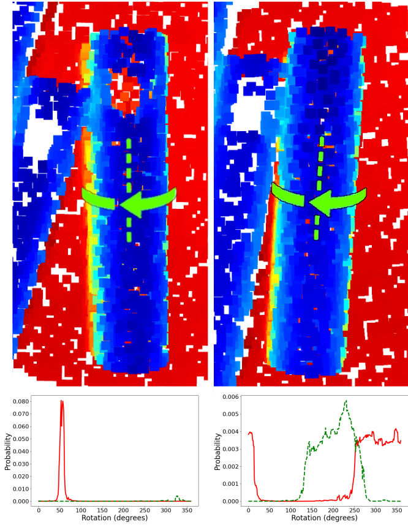

Object pose estimation is crucial to robotic perception and typically provides a single-pose estimate. However, a single estimate cannot capture pose uncertainty deriving from visual ambiguity, which can lead to unreliable behavior. Existing pose distribution methods rely heavily on color information, often unavailable in industrial settings. We propose a novel neural network-based method for estimating object pose uncertainty using only 3D colorless data. To the best of our knowledge, this is the first approach that leverages deep learning for pose distribution estimation without relying on RGB input. We validate our method in a real-world bin picking scenario with objects of varying geometric ambiguity. Our current implementation focuses on symmetries in reflection and revolution, but the framework is extendable to full SE(3) pose distribution estimation.
Current Development
Related Resources
Figure
The pose distribution estimate of our method is shown for both unambiguous and ambiguous views. The top images display the test object in two different poses. Below, the distribution estimates are visualized. The red line indicates the probability of each revolution. The dotted green line shows the same revolution probability for the reflected pose. In the left image, the object’s indent is visible, allowing for a single object pose to be identified. In the right image, the indent is not visible, resulting in a much larger pose distribution in both revolution and reflection.

Demonstration Video
Citation
@article{hagelskjaer2025object,
title={Object Pose Distribution Estimation for Determining Revolution and Reflection Uncertainty in Point Clouds},
author={Hagelskj{\ae}r, Frederik and Arapis, Dimitrios and Madsen, Steffen and Iversen, Thorbj{\o}rn Mosekj{\ae}r},
journal={arXiv preprint arXiv:2512.07211},
year={2025}
}